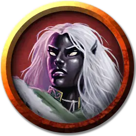

Дроу прислужник
Drow Acolyte
Средний Гуманоид (Эльф), нейтрально-злой

Класс Доспеха 10
Хиты 9 (2к8)
Скорость 30 футов
| мод | спас | ||
|---|---|---|---|
| СИЛ | 10 | +0 | +0 |
| ЛОВ | 10 | +0 | +0 |
| ТЕЛ | 10 | +0 | +0 |
| мод | спас | ||
|---|---|---|---|
| ИНТ | 10 | +0 | +0 |
| МДР | 14 | +2 | +2 |
| ХАР | 11 | +0 | +0 |
Навыки Медицина +4, Религия +2
Чувства тёмное зрение 120 футов, пассивное Восприятие 12
Языки Подземный, Эльфийский
Опасность 1/4 (50 опыта)
Бонус мастерства +2
Особенности
Использование заклинаний. Дроу является заклинателем 1-го уровня. Его базовой характеристикой является Мудрость (Сл спасброска от заклинания 12, +4 к попаданию атаками заклинаниями). У него приготовлены следующие заклинания жреца:
• Заговоры (неограниченно): свет [light], священное пламя [sacred flame], чудотворство [thaumaturgy];
• 1 уровень (3 ячейки): благословение [bless], лечение ран [cure wounds], убежище [sanctuary].
Врождённое колдовство. Базовой характеристикой дроу является Харизма (Сл спасброска от заклинания 10). Он может накладывать следующие заклинания, не нуждаясь в материальных компонентах:
• Неограниченно: пляшущие огоньки [dancing lights];
• 1/день каждое: огонь фей [faerie fire], тьма [darkness].
Наследие фей. Дроу совершает с преимуществом спасброски от очарования, и магия не может его усыпить.
Чувствительность к солнечному свету. Находясь на солнечном свету, дроу совершает с помехой броски атаки, а также проверки Мудрости (Восприятие), полагающиеся на зрение
Действия
Дубина. . Рукопашная атака оружием: +2 к попаданию, досягаемость 5 футов, одна цель. Попадание: Дробящий урон 2 (1к4).
Описание
Прислужник это младший представитель духовенства, обычно помогающий священникам. Он выполняет в храме множество дел и получает от божества незначительные магические способности.